Российский университет дружбы народов ## Цель работы
Изучить архитектуру и компоненты системы фильтрации пакетов в
Linux
Освоить основные команды для управления firewalld
Научиться настраивать зоны, правила и службы
Получить навыки работы с богатыми правилами (rich rules)
Теоретическая справка
Firewalld — динамический межсетевой экран
Основные компоненты: - Зоны (zones) — наборы правил для разных
уровней доверия - Службы (services) — предопределённые правила - Богатые
правила (rich rules) — сложные правила с условиями - Команда:
firewall-cmd — основная для управления
Проверка статуса firewalld
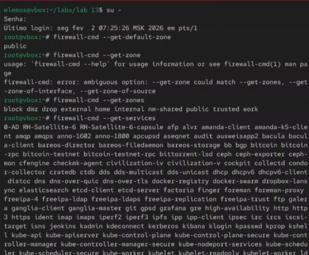
Рис. 1. Проверка статуса службы firewalld
с помощью systemctl
Просмотр всех доступных зон
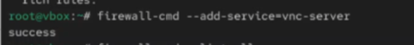
Рис. 2. Просмотр всех доступных зон с
помощью firewall-cmd –get-zones
Просмотр зоны по умолчанию
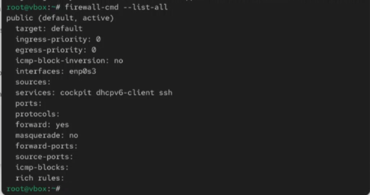
Рис. 3. Просмотр зоны по умолчанию с
помощью firewall-cmd –get-default-zone
Детальная информация о зоне по умолчанию
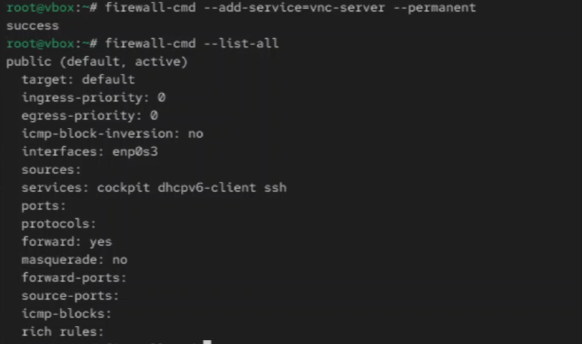
Рис. 4. Детальная информация о зоне
public с помощью firewall-cmd –zone=public –list-all
Просмотр всех активных зон
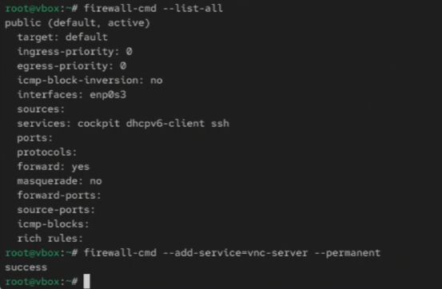
Рис. 5. Просмотр всех активных зон с
помощью firewall-cmd –get-active-zones
Просмотр всех доступных служб
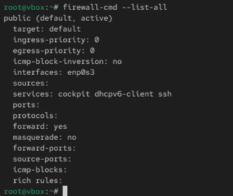
Рис. 6. Просмотр списка всех доступных
служб с помощью firewall-cmd –get-services
Информация о конкретной службе
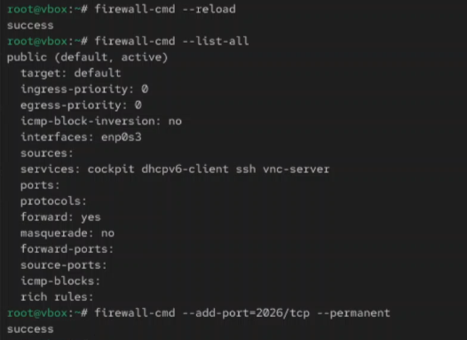
Рис. 7. Просмотр информации о службе HTTP
с помощью firewall-cmd –info-service=http
Изменение зоны по умолчанию
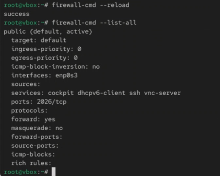
Рис. 8. Изменение зоны по умолчанию на
internal
Добавление интерфейса в зону
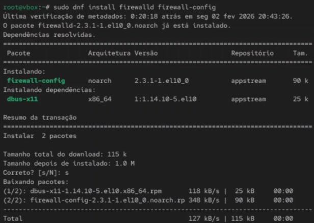
Рис. 9. Добавление интерфейса eth0 в зону
public
Изменение зоны для интерфейса
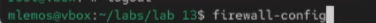
Рис. 10. Изменение зоны интерфейса на
internal
Удаление интерфейса из зоны
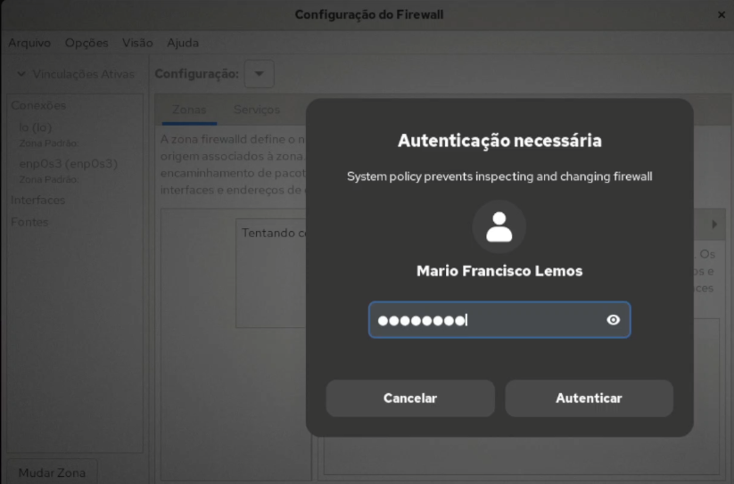
Рис. 11. Удаление интерфейса из зоны
public
Просмотр всех правил всех зон
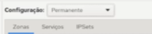
Рис. 12. Просмотр всех правил всех зон с
помощью firewall-cmd –list-all-zones
Добавление службы в зону
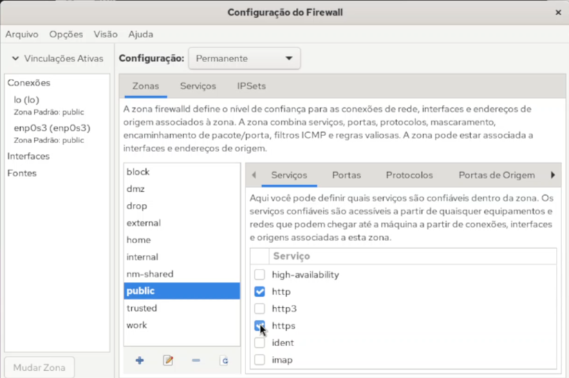
Рис. 13. Добавление службы HTTP в зону
public
Добавление нескольких служб
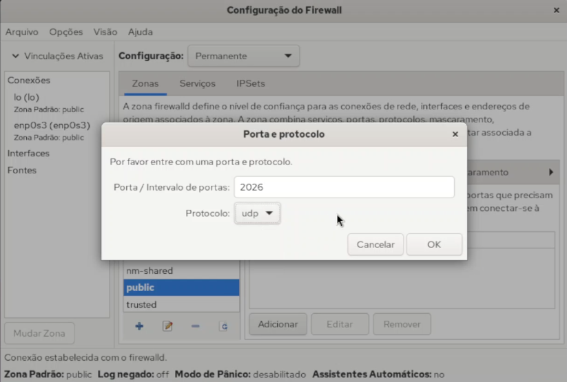
Рис. 14. Добавление нескольких служб
(http, https, ssh) в зону public
Удаление службы из зоны
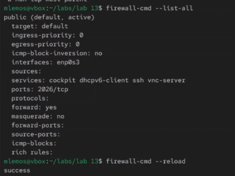
Рис. 15. Удаление службы HTTP из зоны
public
Открытие конкретного порта
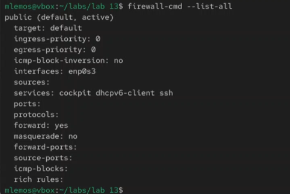
Рис. 16. Открытие порта 8080/tcp в зоне
public
Открытие диапазона портов
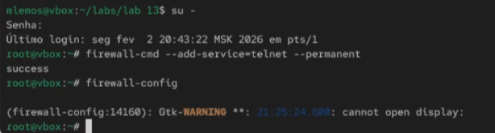
## Закрытие порта
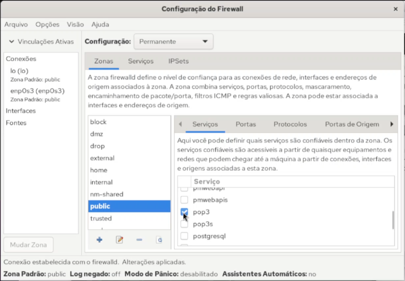
Рис. 18. Закрытие порта 8080/tcp в зоне
public
Добавление богатого правила для источника
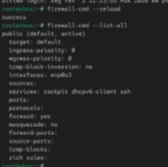
Рис. 19. Добавление богатого правила для
конкретного IP-адреса
Добавление богатого правила с ограничением
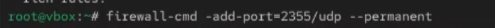
Рис. 20. Добавление богатого правила с
ограничением частоты для SSH
Добавление богатого правила для протокола
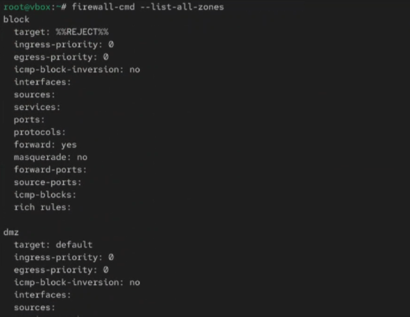
Рис. 21. Добавление богатого правила для
протокола ICMP
Просмотр всех богатых правил
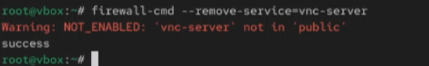
Рис. 22. Просмотр всех богатых правил в
зоне public
Перезагрузка и сохранение правил
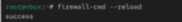
Рис. 23. Перезагрузка конфигурации
firewalld и сохранение временных правил
Вывод
В ходе выполнения лабораторной работы была изучена система фильтрации
пакетов firewalld в Linux. Получены практические навыки управления
зонами, добавления и удаления служб и портов, настройки богатых правил
для тонкой фильтрации трафика.
Список литературы
[1] Linux man pages: firewalld(1), firewall-cmd(1),
firewall-config(1)